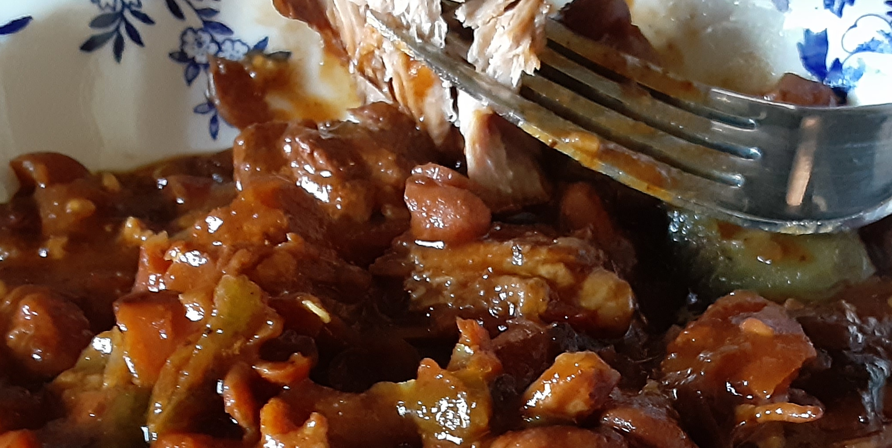

Jalapeno Pork'n Beans

Description
Sweet and Spicy, these are not canned beans! The subtle blend of jelly and peppers can be upped to your liking by adding additional peppers. Serve it as a side, or get a bigger bowl for a meal size serving.
Ingredients
- Pinto Beans (8oz dried beans, cooked) = (two 16oz cans)
- Country Ribs, 3#
- Red Jalapeno Jelly, 10.5oz jar
- A-1 Steak Sauce, 5oz
- Jalapeno Pepper(s) are optional
- Salt, Pepper, Garlic Powder (to taste)
Steps
- Saute the meat in oil, browning on all sides and seasoning with the salt, pepper and garlic powder.
- Add chopped onion and jalapenos, stirring to gather fond from the bottom of the pan.
- Canned beans:
Add (undrained) beans.
- Dried beans:
Rinse 1C (half of a 1# bag), plucking out errant pebbles and odd beans. Drain, add 3 C water and the beans to the pan. Bring to a boil before lowering heat. Covered with a slightly tilted lid to allow steam to escape. Simmer 45 minutes.
- Stir in the Steak Sauce and Jalapeno Jelly.
- Simmer until the (dried) beans are soft and the liquids have reduced to a sauce.
Notes
- Look for a Goldilocks sauce. You don't want it soupy, and you don't want to forget and let it scorch.
- You will find (boneless) Country Ribs in the Pork section. You could substitute Boston Butt, but it will take longer for the meat to cook.